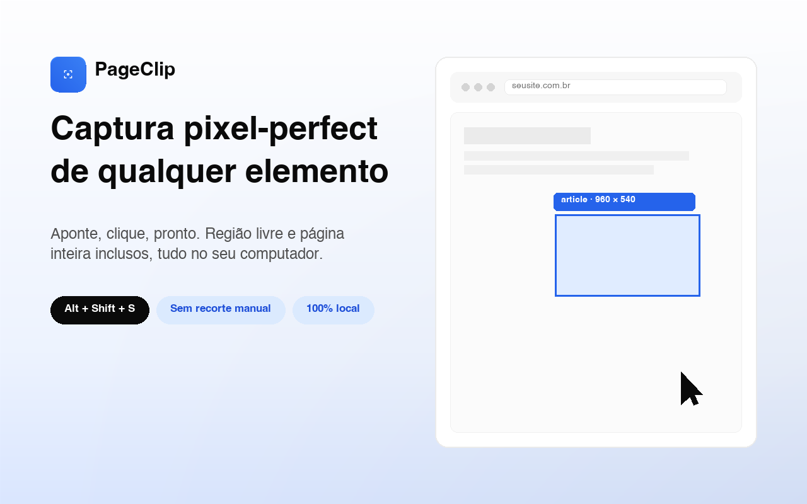

Elemento exato
O recorte usa a escala real da imagem, então bate pixel a pixel mesmo com zoom do navegador ou tela HiDPI.
Extensão gratuita e open source para Chrome e Edge
Passe o mouse, o elemento é destacado, clique e pronto. Sai um PNG só daquele pedaço, sem recorte manual. Região livre e página inteira inclusos.

O recorte usa a escala real da imagem, então bate pixel a pixel mesmo com zoom do navegador ou tela HiDPI.
Arraste para escolher qualquer área da página, com folga ajustável ao redor do recorte.
Alvos maiores que a tela são fotografados em partes e costurados sem erro acumulado, com botão Parar.
Setas percorrem pai, filho e irmãos, a trilha de ancestrais mostra o caminho e Espaço trava a seleção.
Histórico com busca, prévia e ações de baixar, copiar, abrir e excluir. Nada sai da sua máquina.
PNG, JPEG ou WebP, nome de arquivo com tokens, copiar ao capturar, baixar automático e mais.
O PageClip não coleta, não transmite e não compartilha nenhum dado. Sem conta, sem servidor, sem análise de uso. As capturas ficam no IndexedDB local e os ajustes no armazenamento local do navegador. Todo o código é aberto (MIT) e está no GitHub para auditar.
Ler a política completaEnquanto a versão da Chrome Web Store está em revisão, instale pelo modo desenvolvedor:
chrome://extensions e ligue o Modo do desenvolvedor.Requer Chrome ou Edge 116 ou mais novo.